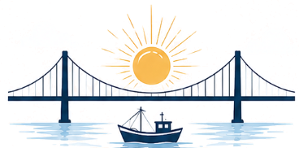
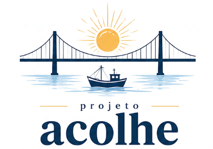
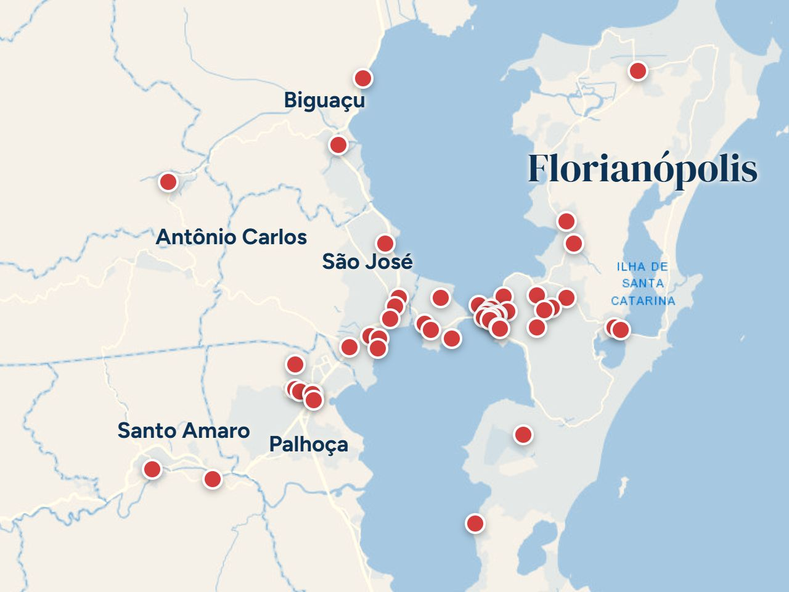
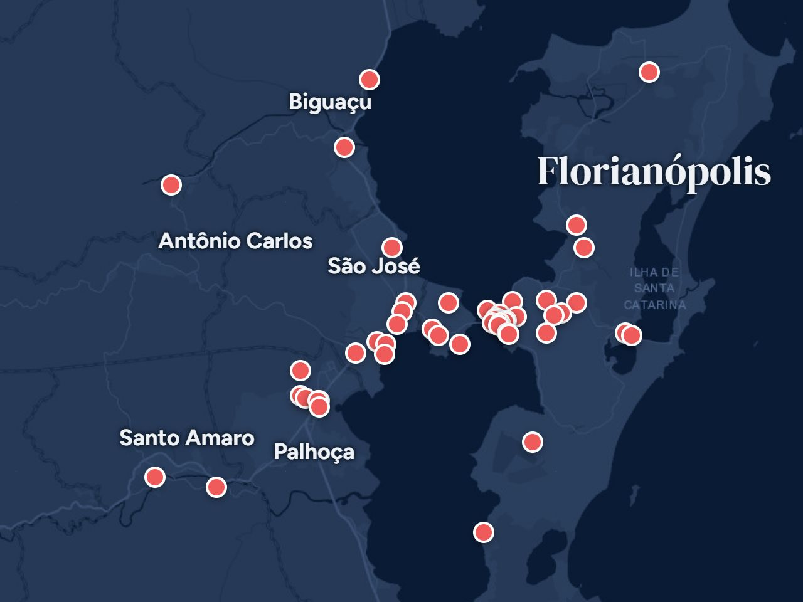
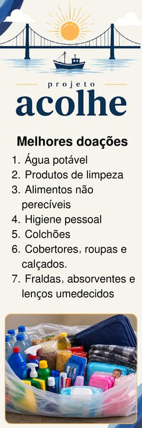
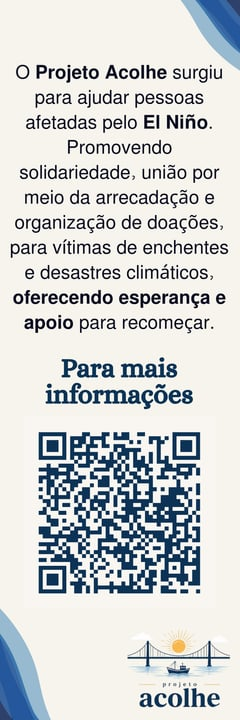
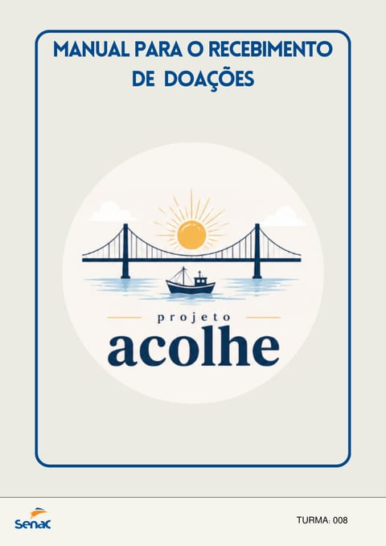
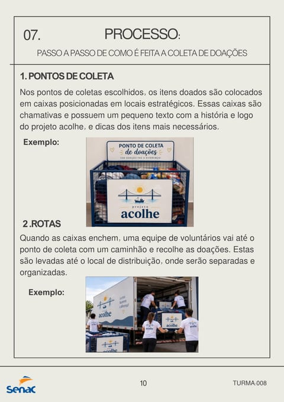

projetoacolhe

Informar, acolher e conectar.
Roupas e cobertas para quem está na rua ou perdeu a casa com os impactos do El Niño na Grande Florianópolis.
Somos a turma 008 do Jovem Aprendiz do Senac de Florianópolis. Com o Projeto Acolhe, apoiamos pessoas em situação de rua e desabrigadas diante dos eventos climáticos extremos ligados ao El Niño.
Explicar o El Niño e como se proteger.
Levar roupas e cobertas para quem passa frio.
Unir quem precisa de ajuda e quem pode ajudar.
Toque numa foto para ampliar.
Igrejas, supermercados, terminais de ônibus, escolas e clubes em 6 cidades da Grande Florianópolis, todos num mapa.
📍 Ver no mapa

📍 48 lugares Abrir o mapa → Esri, OpenStreetMapPara quem vive na rua, chuva forte e frio são um risco à vida. Roupa molhada e falta de coberta causam doenças.
Muitas pessoas em situação de rua nem aparecem nas contagens do governo. Sem saber quantas são, fica difícil ajudar.
O governo já preparou atendimento para quem for atingido pelo El Niño. O Acolhe mostra onde encontrar esse apoio.
O que é e como afeta o Brasil.
Ver → 🛟Antes, durante e depois.
Ver → 🧥Roupas, cobertas e as doações mais pedidas.
Ver → 🤝Quem pode e como começar.
Ver → 🖨️Marca-página e manual para imprimir.
Ver → 📍Lugares no mapa e os mais perto de você.
Ver →É quando o mar do Oceano Pacífico fica mais quente que o normal. Isso muda o tempo no mundo todo, e aqui no Sul traz mais chuva.
A água do Oceano Pacífico fica mais quente que o normal.
Os ventos e as chuvas mudam de lugar no mundo todo.
Mais chuva, enchentes e temporais no Sul do Brasil.
O El Niño foi confirmado
Época de mais chuva e temporais em SC
Deve durar pelo menos até aqui
São opostos: o El Niño esquenta o mar do Oceano Pacífico e a La Niña esfria. Por isso, os efeitos também são contrários.
Mais quente que o normal
Mais fria que o normal
Enfraquecem
Ficam mais fortes
Seca
Mais chuva
Chuvas intensas e enchentes
Menos chuva
Ondas de calor, seca na Austrália e Indonésia, chuva na costa oeste da América do Sul
Efeitos opostos: mais chuva em algumas regiões e seca em outras
O El Niño muda o tempo no planeta inteiro, não só aqui.
Na Austrália, na Indonésia e em partes do Sudeste Asiático.
Na costa oeste das Américas: Peru, Equador e EUA.
O planeta, no geral, fica mais quente.
Tempestades e secas longas acontecem mais vezes.
Fonte do infográfico: MetSul Meteorologia.
Os principais efeitos esperados no nosso estado:
Chuva acima da médiaprincipalmente na primavera e no início do verão
Mais risco de enchentescomo as do RS em 2026, apontadas como impacto inicial do El Niño
Temporais mais frequentescom rajadas de vento, granizo e raios
Deslizamentosem encostas, por causa do solo encharcado
Ondas de caloro El Niño também deixa os dias mais quentes
Mais risco de deslizamentos
Enchentes que chegam rápido
Temporais intensos
O que fazer antes, durante e depois de uma emergência climática.
Receba alertas: mande seu CEP por SMS para o 40199 (Defesa Civil, grátis).
Evite áreas de risco: margens de rios, encostas e lugares que alagam.
Saiba para onde ir: o abrigo, CRAS ou Centro POP mais perto.
Deixe uma mochila pronta com documentos, remédios e roupa seca.
Não atravesse enxurrada: pouca água já derruba uma pessoa.
Vá para um lugar alto ou para um abrigo.
Fique longe de fios e desligue a energia, se for seguro.
Peça ajuda: 199 (Defesa Civil) ou 193 (Bombeiros).
Evite a água da enchente: ela transmite leptospirose.
Só volte para casa quando a Defesa Civil liberar.
Troque a roupa molhada o quanto antes para não adoecer.
Teve febre? Procure um posto de saúde.
Nosso foco são roupas e cobertas, o que mais falta no frio e na chuva. Mas também mostramos as doações mais pedidas em geral.
Nosso foco são roupas e cobertas, mas em enchentes e desastres estas são as doações que mais fazem falta:
Antes de levar, pergunte ao local o que está faltando. Esta lista também está no marca-página para imprimir.
Regra de ouro: só doe o que você usaria.
Pegue a roupa ou coberta e marque o que for verdade:
Marque os itens para ver o resultado.
Só as peças em bom estado.
Tudo pronto para usar.
Sacos fechados, por tipo e tamanho.
Num ponto de coleta. E divulgue!
Dica: escreva por fora do saco o que tem dentro (ex.: “Agasalho – adulto – G”) e amarre os calçados em pares.
Toque na pergunta para ver a resposta.
Pode! Desde que esteja limpa, seca e em bom estado, sem rasgos nem manchas. A única exceção é a roupa íntima: essa precisa ser nova.
Não. Basta estar limpa e bem seca. Dobrar e separar por tamanho já ajuda muito quem vai fazer a triagem.
Colchões estão entre as doações mais pedidas, mas ocupam muito espaço. Ligue antes para o abrigo ou ponto de coleta e combine a entrega.
Sim, se estiver inteiro, sem a sola soltando, e em pares. Amarre os dois com um elástico para não se perderem.
Serve, porque quem perdeu a casa perdeu tudo. Mas no frio e na chuva, agasalhos e cobertores são o que mais faz falta.
Só para instituições conhecidas ou campanhas oficiais (prefeitura, Defesa Civil, ONGs com CNPJ). Desconfie de pedidos de Pix recebidos por mensagem.
Veja as ideias de pontos de coleta no mapa. São sugestões: antes de levar, confirme se o local está recebendo doações.
Não precisa ser especialista: precisa de vontade e compromisso.
Voluntário doa tempo, sem receber por isso. É garantido pela Lei nº 9.608/1998.
✨ Não precisa de experiência nem de profissão. E dá para ajudar sem sair de casa!
TriagemSeparar roupas por tipo e tamanho
DistribuiçãoEntregar roupas e cobertas nos abrigos
AbrigosRecepção, organização e escuta
TransporteLevar as doações até os abrigos
DivulgaçãoCompartilhar a campanha nas redes
ArrecadaçãoCampanha do agasalho na escola ou no trabalho
DesignCriar cartazes e posts
ContatoLigar para abrigos e ver o que falta
Um abrigo, ONG, igreja ou CRAS.
Diga que quer ajudar e seus horários.
Uma conversa rápida antes de começar.
Assine o termo de voluntariado.
Seja pontual e avise se faltar.
No primeiro dia, leve: documento, garrafa de água, calçado fechado e capa de chuva.
Baixe, imprima e distribua. Ajude a espalhar o Projeto Acolhe.


Na frente, as doações mais pedidas em geral. No verso, o que é o projeto e o QR code que abre este site.


O passo a passo do Projeto Acolhe, feito pela turma 008 do Senac: do El Niño até a entrega das doações.
Ideias de lugares reais por onde muita gente passa e que poderiam receber roupas e cobertas.
Toque em um ponto vermelho ou em um lugar da lista.
48 lugares
São apenas sugestões: esses lugares não são pontos de coleta oficiais. Confirme antes de levar a doação. Mapa: Esri e OpenStreetMap.
Peça autorização ao responsável pelo lugar.
Monte uma caixa identificada: “Roupas e cobertas – Projeto Acolhe”.
Divulgue com cartaz e nas redes sociais.
Combine a entrega com um abrigo ou ONG.